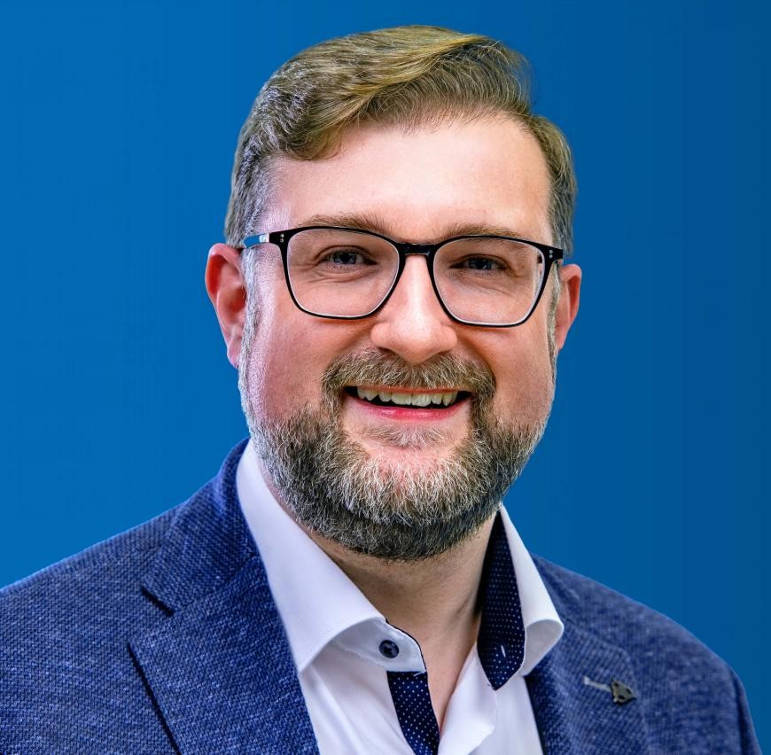

Projektleitung
Prof. Dr. Björn Sprungk
ist tätig an der Technischen Universität und Bergakademie Freiberg. In der Rolle des Leadpartners übernimmt er die projektinterne Koordination, sowie die technischen Analysen bezüglich Infrastruktur des Assistenzsystems.